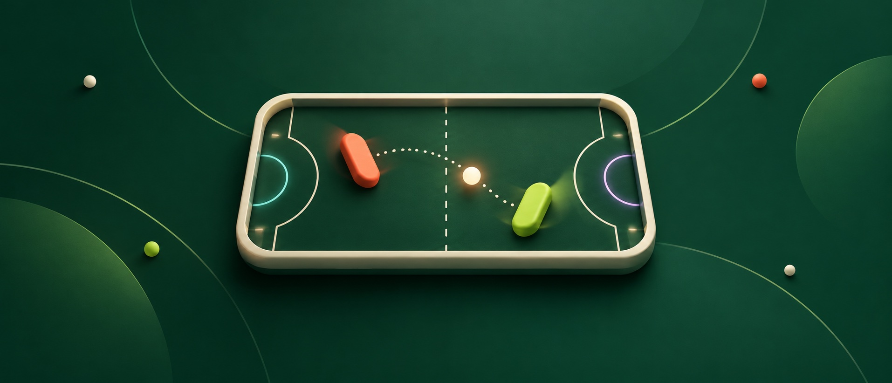

01
Положите между собой
Положите iPhone или iPad на стол. У каждого своя половина экрана и управление, повёрнутое к нему.
Закрытая бета в TestFlight
Положите iPhone между собой. Выберите сторону. Пусть «ещё один раунд» станет вашей маленькой традицией.
Для iPhone и iPad · iOS / iPadOS 17 и новее

Маленький стол. Большой азарт.
01 / Присаживайтесь
Перерыв между встречами. Поездка в поезде. Диван после ужина. Для короткого матча всегда найдётся место.
01
Положите iPhone или iPad на стол. У каждого своя половина экрана и управление, повёрнутое к нему.
02
Двигайте ракетку пальцем. Три отбитых мяча заряжают усиленный удар — поймайте мяч краем ракетки, чтобы его выполнить.
03
Матч идёт до семи очков, а кубок — до трёх побед в матчах. Для реванша достаточно одного нажатия.
Усиленный удар делает мяч быстрее, а вашу ракетку — уже до следующего успешного отбивания или конца розыгрыша. Выбирайте момент.
02 / Новый стол — новый поворот
Классический стол, чтобы поймать ритм. И пять способов его сбить. Выберите арену и посмотрите, что меняется.
01 / 06
Только вы, мяч и чистое поле. Поймайте ритм, найдите свой угол и отправьте мяч мимо соперника.
Попробуйте — Цельтесь краем ракетки. Каждый возврат важен.
02 / 06
Препятствия превращают прямой удар в неожиданный отскок. Прочитайте траекторию раньше соперника.
Попробуйте — Играйте от препятствия, а не только от ракетки.
03 / 06
Поперечный ветер меняет траекторию мяча. Ожидаемый удар не всегда окажется тем, который прилетит.
Попробуйте — Оставляйте место для манёвра.
04 / 06
Движущийся проход разделяет центр поля. Теперь нужно выбрать не только угол, но и момент.
Попробуйте — Дождитесь своего окна.
05 / 06
Мяч входит в один портал и появляется из другого. Придётся следить сразу за обоими концами.
Попробуйте — Смотрите на выход, а не только на вход.
06 / 06
Попадите в боковой карман цвета соперника. Свой карман — автогол. Теперь у каждого угла есть цена.
Попробуйте — Иногда надёжный удар — лучший выбор.
03 / Соперник найдётся
Общий стол — в центре игры. Но матч состоится и тогда, когда ваш постоянный соперник занят.
Два человека. Одно устройство. Для локальной игры не нужны аккаунт и интернет.
Три уровня сложности: от разминки до серьёзного вызова. Играйте без интернета, когда захочется.
Пригласите друга через Game Center и играйте на разных устройствах. Сетевой режим в бете: нужны интернет и Game Center.
Для тех, кто любит «до трёх»
В аркадном кубке стол меняется каждый раунд: Шлюз, Порталы, Карманы, Рикошет и Бриз. Кубок заберёт первый, кто выиграет три матча — до пятого можно и не дойти.
До первой подачи
Нет. Table Rivals работает на обычных iPhone и iPad с iOS или iPadOS 17 и новее. На большом экране обоим игрокам просторнее.
Да. Матчи вдвоём на одном экране и игра с компьютером работают без интернета. Для игры с другом на другом устройстве нужны интернет и Game Center.
В текущей закрытой бете открыты все шесть арен, встроенные покупки не подключены. Цена и платные возможности релиза ещё не определены.
Быстрый реванш, более сильный компьютер, новая арена, аркадный кубок или попытка побить рекорд розыгрыша. Рекорд хранится на вашем устройстве.
Напишите нам с темой «Table Rivals — бета». Ответим о доступных вариантах доступа. Это закрытая бета в TestFlight: запрос не добавляет вас в неё автоматически.
Закрытая бета в TestFlight
Приглашайте за стол. Запросите доступ к закрытой бете и помогите сделать следующий раунд интереснее.
Откроется почтовое приложение. Доступ согласуем в переписке; публичной ссылки TestFlight пока нет.